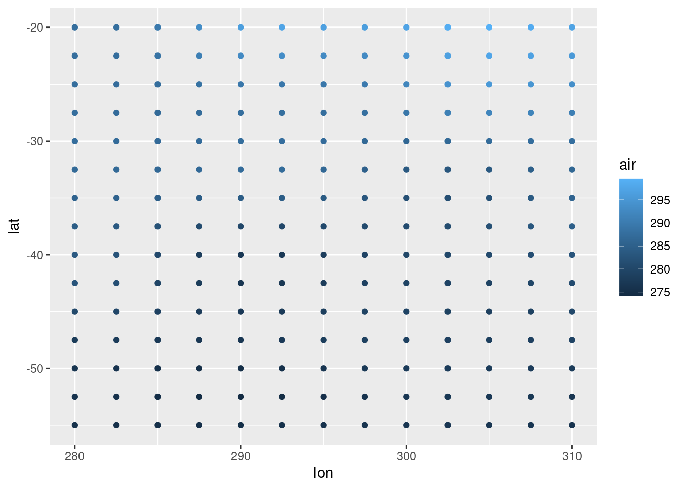
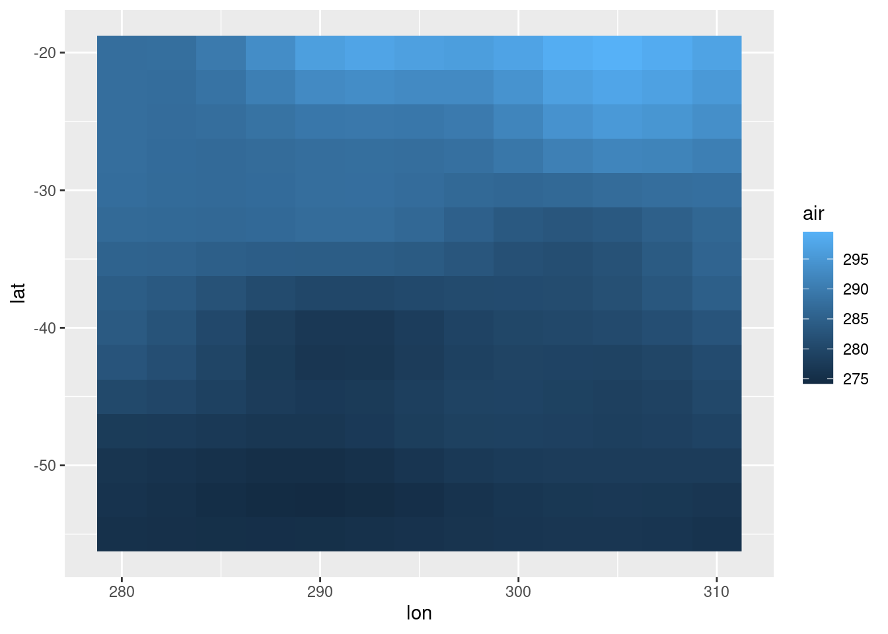
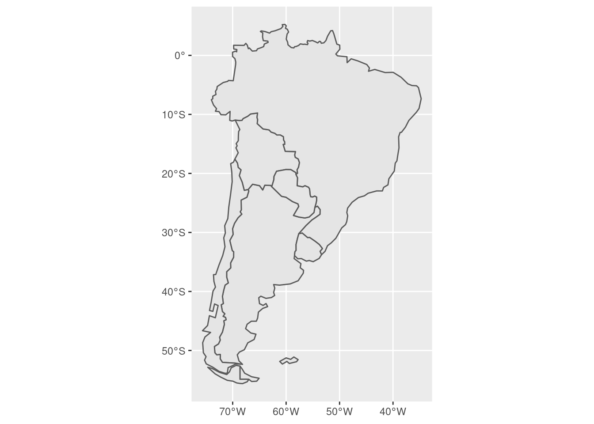
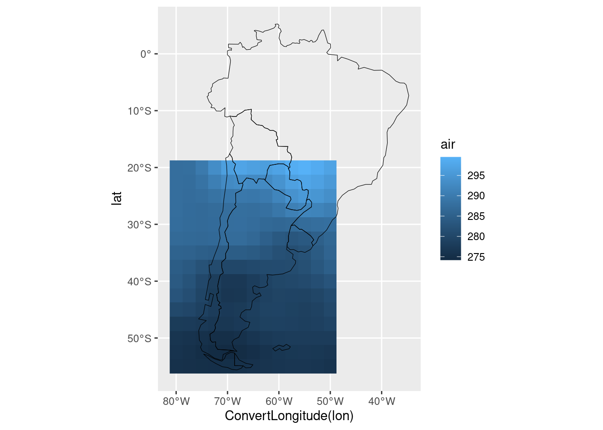
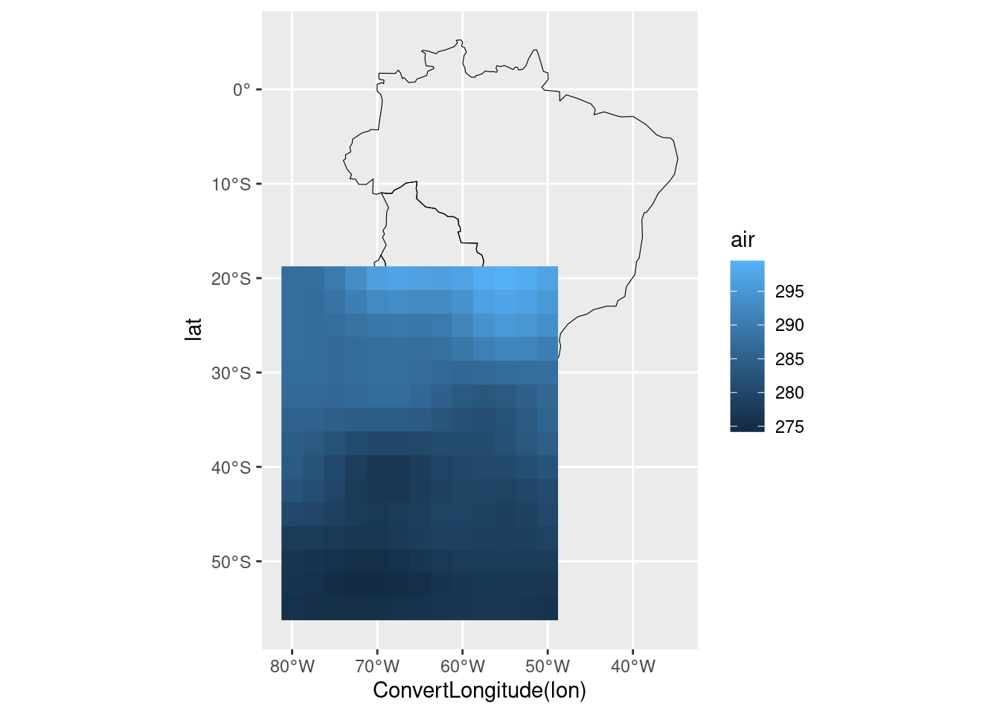
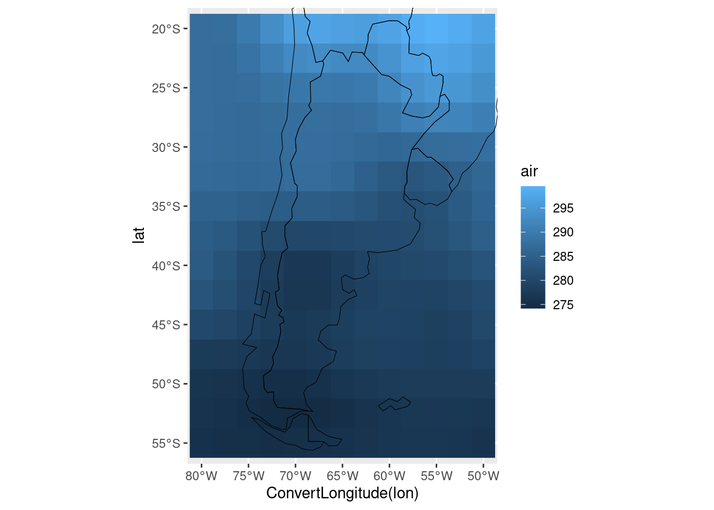
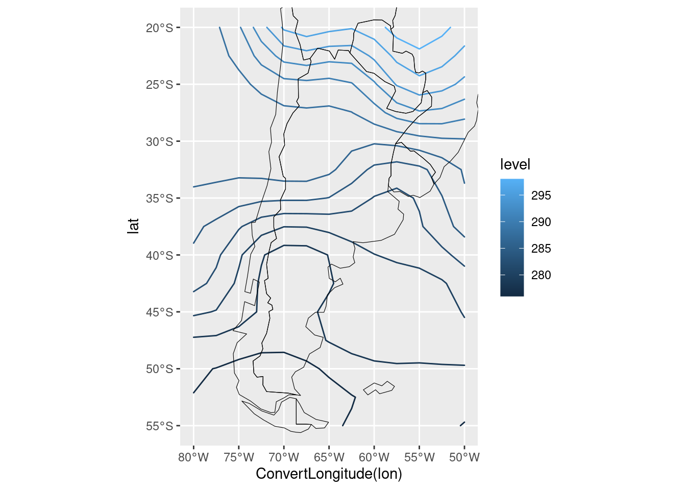
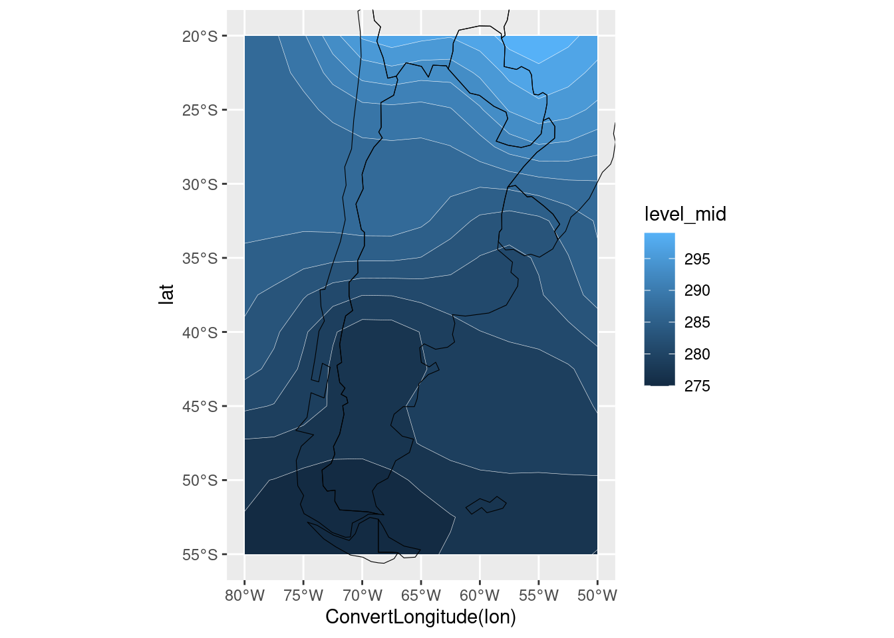

# file <- system.file("extdata", "temperature.nc", package = "metR")
GlanceNetCDF("datos/temperatura.nc")## ----- Variables -----
## air:
## mean Daily Air temperature in degK
## Dimensions: lon by lat by level by time
##
##
## ----- Dimensions -----
## time: 1 values from 2010-07-09 to 2010-07-09
## level: 17 values from 10 to 1000 millibar
## lat: 73 values from -90 to 90 degrees_north
## lon: 144 values from 0 to 357.5 degrees_easttemperatura <- ReadNetCDF("datos/temperatura.nc",
vars = "air",
subset = list(level = 1000,
lat = c(-55, -20),
lon = c(280, 310)))ggplot(temperatura, aes(lon, lat)) +
geom_point(aes(color = air))
grafico <- ggplot(temperatura, aes(lon, lat)) +
geom_raster(aes(fill = air))
grafico
mapa <- rnaturalearth::ne_countries(country = c("argentina", "chile", "uruguay",
"paraguay", "brazil", "bolivia",
"falkland islands"),
returnclass = "sf")
ggplot(mapa) +
geom_sf()
mi_mapa <- geom_sf(data = mapa, inherit.aes = FALSE, fill = NA, color = "black", size = 0.2) ggplot(temperatura, aes(ConvertLongitude(lon), lat)) +
geom_raster(aes(fill = air)) +
mi_mapa
# Esto no
ggplot(temperatura, aes(ConvertLongitude(lon), lat)) +
mi_mapa +
geom_raster(aes(fill = air)) 
ggplot(temperatura, aes(ConvertLongitude(lon), lat)) +
geom_raster(aes(fill = air)) +
mi_mapa +
coord_sf(xlim = c(-80, -50), ylim = c(-55, -20))
ggplot(temperatura, aes(ConvertLongitude(lon), lat)) +
#geom_raster(aes(fill = air)) +
geom_contour2(aes(z = air, color = stat(level))) +
mi_mapa +
coord_sf(xlim = c(-80, -50), ylim = c(-55, -20))
ggplot(temperatura, aes(ConvertLongitude(lon), lat)) +
#geom_raster(aes(fill = air)) +
geom_contour_fill(aes(z = air)) +
geom_contour2(aes(z = air), color = "white", size = 0.1) +
mi_mapa +
coord_sf(xlim = c(-80, -50), ylim = c(-55, -20)) 